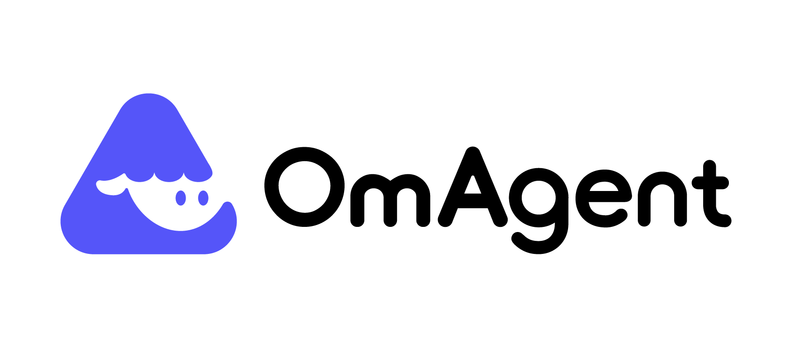
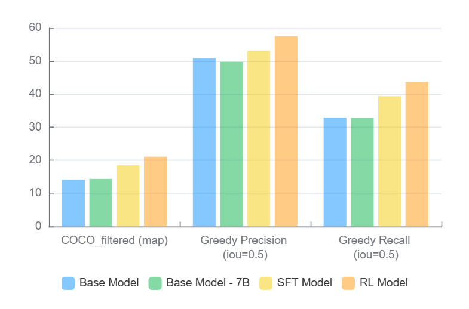
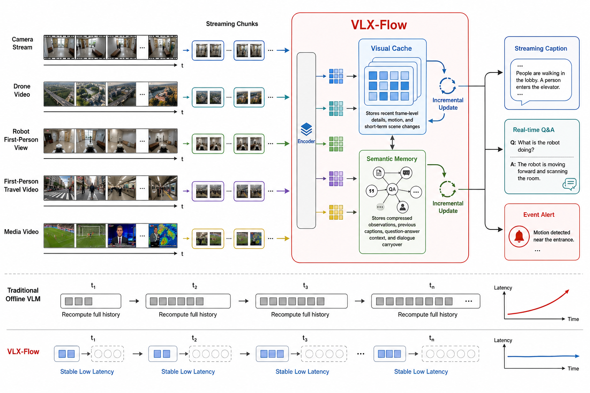
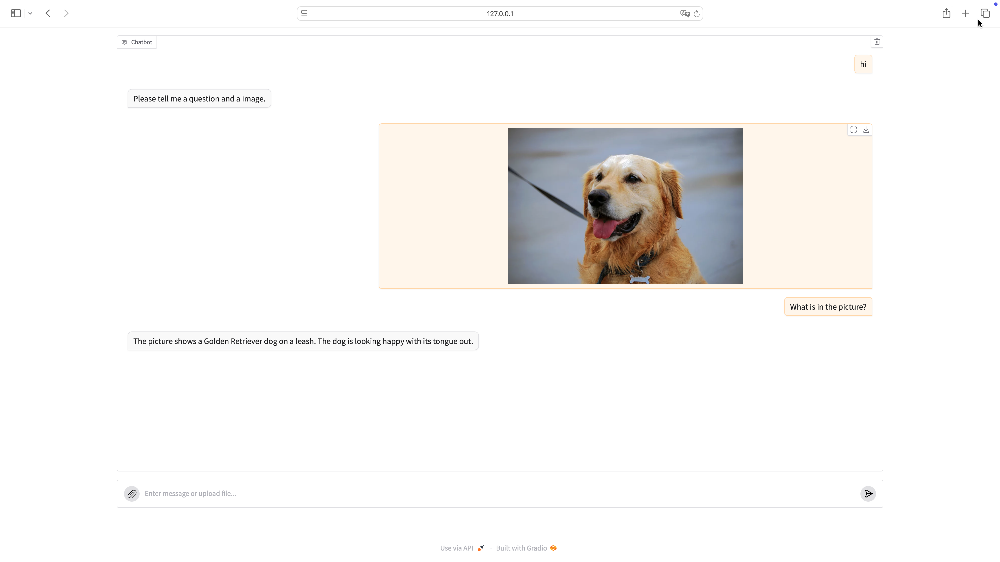
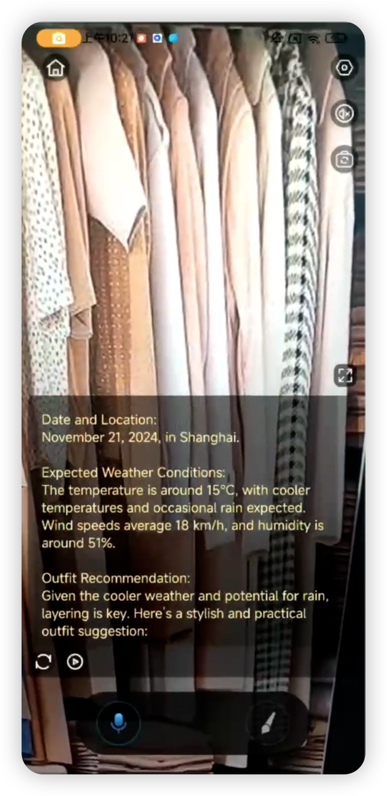
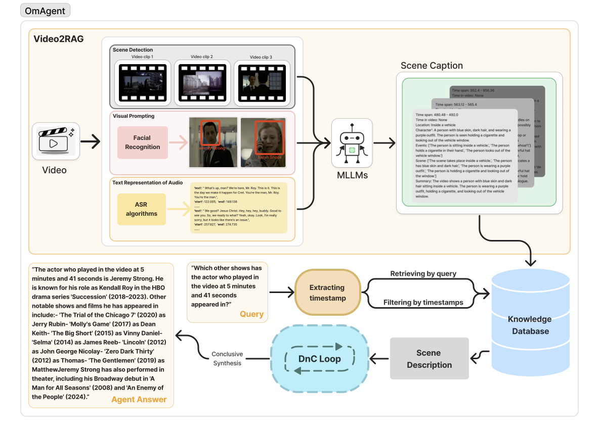
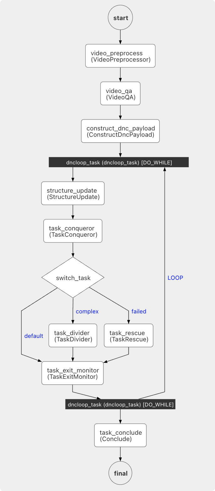
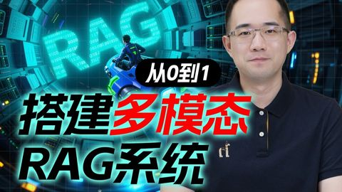
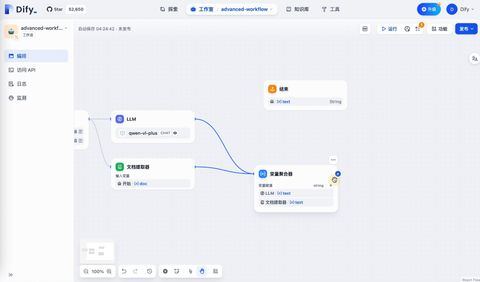

Om AI Lab 学习手册
一个「开放多模态 AGI 研究」实验室的全景导览，外加旗下最适合做应用的 OmAgent（EMNLP-2024 多模态智能体框架）的逐层拆解。从「这是什么」一路到「怎么在本机跑起来」。

1 · Om AI Lab 是什么
一句话：一个聚焦空间智能（Spatial Intelligence）与具身 AI的开源多模态研究团队。
Om AI Lab 的核心主张是把高层逻辑推理（LLM/VLM 式的「思考」）与细粒度视觉感知（开放词汇检测、视觉定位 grounding、图像缩放探索）打通，推动模型从「应试式完成任务」走向「面向真实场景的复杂问题求解」。它的产出横跨整条技术栈：
🧠 强化学习 VLM
VLM-R1 用 RL 提升视觉理解，是组织的人气旗舰。
🎯 实时开放词汇检测
OmDet 端到端、实时、可检测任意类别。
🤖 多模态智能体框架
OmAgent 把 Agent 工程化、可量产（本手册重点）。
📊 评测基准集群
OVDEval / VL-CheckList / open-agent-leaderboard 等。
团队学术产出密集（EMNLP / AAAI / TGRS 等），同时把成果做成高 star、面向生产的开源仓库——既「发论文」也「能落地」。
2 · 项目全景地图
24+ 个仓库不必逐个看。按方向归类，并给出「你想干 X，先学哪个」的选型建议。
| 仓库 | 干什么 | 方向 | Star |
|---|---|---|---|
| VLM-R1 | 用强化学习提升视觉理解（旗舰） | VLM | ~6k |
| OmAgent | 构建多模态语言智能体，原型→生产 · EMNLP-2024 | Agent | ~2.7k |
| OmDet | 实时、端到端开放词汇目标检测 | 检测 | ~1.4k |
| VLM-FO1 | 打通高层推理与细粒度感知 | VLM | 322 |
| RS5M | 大规模遥感视觉-语言数据集 · TGRS | 遥感 | 313 |
| OmTrackVLA | 可复现的跟踪类 VLA 研究 | Agent/VLA | 220 |
| VL-CheckList | 评测视觉-语言预训练模型 · EMNLP 2022 | 评测 | 139 |
| ZoomEye | 树状图像探索实现「类人缩放」· EMNLP-2025 Oral | VLM | 91 |
| GroundVLP | 零样本视觉定位 · AAAI 2024 | 检测 | 74 |
| OVDEval | 开放词汇检测综合评测基准 · AAAI 2024 | 评测 | 64 |
| open-agent-leaderboard | 可复现的语言智能体研究 / 排行榜 | 评测 | 36 |
| ImageRAG | 超高分辨率遥感影像分析 · GRSM | 遥感 | 32 |
| 其余：VLX-Flow（流式视频理解）、OmChat / OmModel（多模态模型）、awesome-RSVLM（资源清单）、Probing-VLM-VGM、habitat-lab（具身，fork）… | |||
选型地图：你想干什么，先学哪个？
🤖 做多模态 Agent 应用
先学 OmAgent（本手册重点）。要做具身/跟踪再看 OmTrackVLA、habitat-lab；想给 Agent 打分看 open-agent-leaderboard。
🧠 训练 / 微调 VLM（尤其 RL）
先学 VLM-R1（旗舰）。再看 VLM-FO1（推理+细粒度感知）、ZoomEye（类人缩放）、OmChat / OmModel。
🎯 目标检测 / 开放词汇 & 定位
先学 OmDet（实时开放词汇）。再看 GroundVLP（零样本定位）。
📊 评测 / 基准
先学 OVDEval + VL-CheckList。Agent 评测看 open-agent-leaderboard。
组织代表作一览（官方配图）




3 · OmAgent 这是什么 深入开始
一个让你轻松构建多模态语言智能体的 Python 库——把 worker 编排、任务队列、节点优化这些工程脏活藏在简洁接口背后，让你专注于「定义 Agent 干什么」。
智能体可以对 文本 / 图像 / 视频 / 音频 进行推理与任务执行。OmAgent 由 Om AI Lab 出品，Apache-2.0 许可，论文录用于 EMNLP-2024（arXiv:2406.16620）。它最被津津乐道的两个场景是：长视频（小时级）理解 和 端侧（手机）个人助手。
三个官方 Demo
长视频问答
Gradio 网页：上传一段小时级视频，直接对内容提问。
手机个人助手
多模态端侧助手，官方对标 Google「Astra」。
推理算子对比
同一框架下横评 CoT / ReAct / PoT 等算法（含成本）。


4 · 面向领域 & 亮点
问题域：多模态 AI 智能体——在文本/图像/视频/音频上做推理与任务执行，尤其擅长长视频理解与端侧助手。
新颖 / 真正有用的点
- 图（Graph）式工作流编排引擎 + 多种记忆类型（短期 STM / 长期 LTM）。
- 原生支持 VLM、实时 API、计算机视觉模型，以及手机设备连接。
- 内置可切换的推理算子：ReAct-Pro、CoT、自洽 CoT（SC-CoT）、程序化思维 PoT，乃至 ToT / GoT / RAP / V* / ZoomEye。
- 本地模型部署：通过 Ollama 或 LocalAI 跑本地模型，不必依赖云端 API。
- 全分布式架构 + 可选 lite 轻量模式（无需任何中间件即可起步）。
- 面向复杂/长视频的分而治之（Divide-and-Conquer, DnC）方法论。
实测效果：推理算子横评（Open Agent Leaderboard, gpt-3.5-turbo）
同一框架下把不同推理策略放在 GSM8K / AQuA 上对比，既看正确率也看美元成本——这正是「框架化」带来的价值：换算子像换零件。
| 算法 | 平均分 | GSM8K 分 | GSM8K 成本 | AQuA 分 | AQuA 成本 |
|---|---|---|---|---|---|
| SC-CoT | 73.69% | 80.06% | $5.02 | 67.32% | $0.65 |
| CoT | 69.86% | 78.70% | $0.68 | 61.02% | $0.10 |
| ReAct-Pro | 69.74% | 74.91% | $3.46 | 64.57% | $0.49 |
| PoT | 64.42% | 76.88% | $0.69 | 51.97% | $0.16 |
| IO（基线） | 38.40% | 37.83% | $0.33 | 38.98% | $0.04 |
5 · 架构组成
三层结构：底层 资源 & 算子 → 中层 Worker（带模型与记忆） → 上层 Workflow（任务编排）。
① 资源层
模型：Ollama / OpenAI；外部工具：人脸识别、抽帧、网搜、Rewinder、文件读写；状态存储 Redis；向量库 Vector DB。
② Worker（节点）
每个 Worker 内含 LLM + VLM + STM(短期记忆) + LTM(长期记忆)，是工作流里一个可复用的执行单元。
③ Workflow
把多个 Task/Worker 编排成图（DAG）：Task1 → Task2 → … → TaskN，支持顺序、分支、循环。
算子库（Operators）
工作流之下是一组可插拔的推理算子，决定 Worker「怎么想」：
运行模式：lite vs full
| 模式 | 中间件 | 适用 |
|---|---|---|
| lite 轻量 | 无需中间件 | 快速起步、跑示例、学习——推荐入门用这个 |
| full 完整 | Redis（状态）+ Milvus（向量库）+ Conductor（工作流编排，类 Netflix Conductor） | 分布式、可量产部署 |
6 · 技术原理
把「Agent 怎么跑起来」拆成四件事：工作流引擎、可切换算子、模型服务、长上下文的分治+RAG。
① 工作流引擎：一张 Worker 的有向图
工作流是由「Worker（节点）」组成的图/DAG，靠任务队列驱动；full 模式下用 Conductor 做编排后端。下面是官方「以 DnC 为例」的完整工作流：
关键点：switch_task 根据任务状态分流——简单任务直接做（default）、复杂任务拆分（task_divider）、失败任务救援重试（task_rescue），再由 DO_WHILE 循环逼近答案，最后 task_conclude 汇总。这就是「分而治之」的工程化落地。
② 可切换的智能体算子
CoT / SC-CoT / ReAct-Pro / PoT 等被实现成可互换的算子，所以你能像 第 4 节那张表一样，在同一任务上横评不同推理策略的精度与成本。
③ 模型服务：云端 + 本地都行
既支持远程（OpenAI 兼容端点，自定义 key/endpoint），也支持本地（Ollama、LocalAI），并原生接入 VLM 与 CV 模型。
④ 长视频理解：Video2RAG（分治 + 带时间戳的 RAG）

- 预处理：检测场景边界把视频切块，按间隔抽帧；音频经 ASR 转文字；用 VLM 总结每段内容，全部写入向量库（每条带时间戳）。
- 问答：用户提问触发——从向量库按查询检索相关信息，并定位相关片段的大致时间戳。
- 执行：用分治任务树（DnC Loop）对问题逐步求解，最后结论综合成答案。

7 · 怎么部署使用 官方步骤
环境要求：Python ≥ 3.10。纯 API 调用不强制要 GPU；本地模型（Ollama/LocalAI）可选；full 模式才需要 Docker 中间件。入门建议走 lite 模式 + SimpleVQA 示例。
安装
# 从 PyPI 安装
pip install omagent-core
# 或从源码可编辑安装
# pip install -e omagent-core跑通最小示例（SimpleVQA）
- 编译容器配置
cd examples/step1_simpleVQA python compile_container.py - 配置 LLM（在
gpt.yml里，或用环境变量）export custom_openai_key="your_openai_api_key" export custom_openai_endpoint="your_openai_endpoint" # Windows PowerShell: # $env:custom_openai_key="..."; $env:custom_openai_endpoint="..." - 启动网页 Demo，浏览器打开
http://127.0.0.1:7860cd examples/step1_simpleVQA python run_webpage.py
进阶：长视频理解示例
python run_webpage.py # 浏览器上传视频并提问
python run_cli.py # 命令行，先给视频路径- 本地模型教程：
docs/concepts/models/Ollama.md、examples/video_understanding/docs/local-ai.md - 手机助手教程：
docs/tutorials/agent_with_app.md - 文档站：om-agent.com（注：会跳转到
om-agent.cn，该域名曾有证书问题，优先用 GitHub 仓库内的 docs）
8 · 我的实操记录 待回填
本节按计划暂不真正安装（这些是带大模型的研究项目，先把脚本和检查准备好，等你决定真装时一键回填本节）。当前目录已生成两个脚本：
🔍 scripts/check-env.ps1
检查 Python ≥3.10、pip、git、（可选）Docker / Ollama 是否就绪，并打印诊断。真装前先跑它。
⬇️ scripts/setup-omagent.ps1
git clone OmAgent 到当前目录、创建 venv、装 omagent-core、并提示下一步。默认 dry-run，加 -Run 才真正执行。
建议的真装流程（Windows）
# 1. 先体检
./scripts/check-env.ps1
# 2. 预览将要执行的动作（不改动任何东西）
./scripts/setup-omagent.ps1
# 3. 确认无误后真正执行（克隆 + 建 venv + 安装）
./scripts/setup-omagent.ps1 -Run▢ 回填占位（真装后补这里）
- 环境体检输出（check-env 截图 / 文本）
- 安装过程中的报错与解决（踩坑日志）
- SimpleVQA 跑通截图（127.0.0.1:7860）
- 长视频理解 demo 的实际效果截图
- 本机资源占用 / 耗时记录
9 · 相关 GitHub 项目
把 OmAgent 放进 Agent 框架的版图里看——左边是它在同组织的兄弟仓库，右边是外部同类的主流框架。星标与「最后更新」为抓取于 2026-06-27 的真实数据。
同组织相关仓库（一起用更香）
📊 open-agent-leaderboard
功能：可复现的 Agent 评测/排行榜，第 4 节那张算子横评表就出自它。
差异：评测工具，不是框架本体。
⭐36 · 更新 2025-06-25 · 仓库
🧩 OmModel / OmChat
功能：Om AI Lab 自家的多模态模型套件，可作为 OmAgent 的 VLM 后端。
差异：提供「模型」，OmAgent 提供「编排」。
⭐45 / 19 · OmModel
外部同类：主流 Agent 框架对比
| 项目 | 定位 / 功能 | 与 OmAgent 的差异 | 星标 | 最后更新 |
|---|---|---|---|---|
| OmAgent | 多模态语言智能体框架（图工作流 + 算子 + 记忆） | 基准本体：多模态优先（视频/图/音），长视频 DnC、原生 VLM/CV/手机；研究取向 | 2.7k | 2025-03-19 |
| LangChain | 通用 LLM 应用 / Agent 工程平台，生态最大 | 文本优先、组件海量但偏重；OmAgent 更聚焦多模态与视频 | 140k | 2026-06-26 |
| Dify | 生产级 Agentic 工作流平台，带可视化 GUI | 低代码 GUI + 可托管；OmAgent 是代码库、更偏研究与定制 | 147k | 2026-06-27 |
| AutoGPT | 自治智能体平台，面向「让人人可用 AI」 | 强调自治/低门槛；OmAgent 强调多模态管线与算子可控 | 185k | 2026-06-27 |
| MetaGPT | 多智能体「软件公司」，角色协作写软件 | 多 Agent 角色分工专精软件开发；OmAgent 面向通用多模态任务 | 69k | 2026-01-21 |
| AutoGen | 微软的多智能体对话编程框架 | 核心是多 Agent 会话；OmAgent 核心是图工作流 + 多模态感知 | 59k | 2026-04-15 |
| CrewAI | 角色扮演式自治 Agent 编排 | 主打角色协作、轻量上手；OmAgent 强在多模态与长视频 | 54k | 2026-06-27 |
| LlamaIndex | 文档 Agent / RAG & OCR 平台 | 数据/RAG 中心；OmAgent 的 RAG 是其一环（Video2RAG），范围更偏多模态 Agent | 50k | 2026-06-26 |
10 · 学习视频
真实可点的学习视频（封面已下载到本地）。诚实说明：OmAgent 偏研究型项目，目前没有专门的视频教程，连 YouTube/英文都搜不到独立视频——所以这里分成「项目相关」与「相关主题」两类，后者帮你补多模态 Agent 的背景。
① 项目相关（团队 / 作者本人）
② 相关主题（补多模态 Agent 背景）

B站对应 Video2RAG
B站对照 Dify③ 英文深入资料（非视频，YouTube 暂无独立视频）
- EMNLP-2024 论文（ACL Anthology） — 官方方法的同行评审版本，最权威
- arXiv:2406.16620 — 预印本，含完整图与实验
- MarkTechPost 解读 · Medium 图文讲解
11 · 术语表 可搜索
学新项目最大的拦路虎是黑话。这里收录本手册出现的关键术语，输入关键词即时过滤（中英文都行）。
./assets/，可离线打开本页。